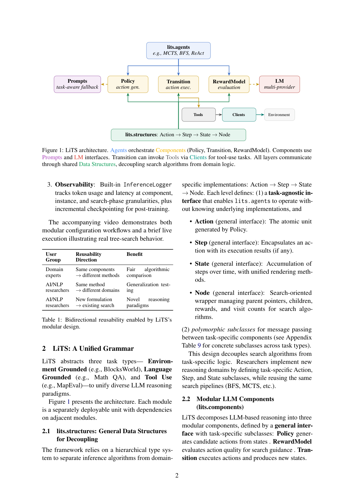

将树搜索解耦为 Policy / Transition / RewardModel 三大可复用组件，并通过装饰器注册表实现跨算法、跨领域的即插即用扩展
LiTS 是一个用于通过树搜索进行 LLM 推理的模块化 Python 框架。它将树搜索解耦为三个可复用组件——Policy（策略）、Transition（转移）与 RewardModel（奖励模型）——这些组件可即插即用地接入 MCTS、BFS 等算法。基于装饰器的注册表使领域专家能通过注册组件扩展到新领域，也使算法研究者能实现自定义搜索算法。我们在 MATH500（语言推理）、Crosswords（环境规划）与 MapEval（工具使用）上验证了可组合性，表明组件与算法是正交的：组件可在同一任务类型内跨算法复用，算法也能跨所有组件与领域工作。我们还报告了一个「模式坍塌（mode-collapse）」发现：在无限动作空间中，LLM 策略的多样性——而非奖励质量——才是有效树搜索的瓶颈。
用于 LLM 推理的树搜索方法——如 Tree-of-Thoughts、RAP、ReST-MCTS——在复杂推理任务上展现出强劲性能。然而，现有实现大多是任务特定的，在适配新领域或跨方法比较时需要大量重实现工作。我们提出 LiTS（Language Inference via Tree Search），一个模块化 Python 框架，让用户「只修改所需部分、复用其余部分」。LiTS 面向两类互补工作流的用户：(1) AI/NLP 研究者——设计新搜索算法或新推理结构（如子问题分解），仅需改动步结构、复用搜索算法；(2) 领域专家——注入领域特定逻辑（提示、工具、环境动力学）而无需触碰搜索内部。LiTS 通过将推理算法与领域实现隔离，实现了双向可复用性（表 1）。
相应地，LiTS 还解决了开发 LLM 推理智能体的三个关键挑战：1. 可复用性——通用数据结构（State、Action、Step）解耦推理算法与领域实现；领域逻辑进一步分解为 Policy/Transition/RewardModel 三个细粒度组件，使领域专家仅替换领域组件即可跨领域复用搜索算法，研究者以相同领域逻辑跨领域评估同一算法。2. 可扩展性——组件与搜索模块可通过外部导入和装饰器注册扩展，无需修改核心包（表 2）。3. 可观测性——内置 InferenceLogger 在组件、实例与搜索阶段粒度追踪 token 用量与延迟，并提供增量检查点以支持训练后分析。
LiTS 抽象出三类任务类型——环境锚定（如 BlocksWorld）、语言锚定（如数学问答）、工具使用（如 MapEval）——以统一多样化的 LLM 推理范式。图 1 展示了其架构：每个模块都是可独立部署、依赖相邻模块的单位。

框架依赖一套层级类型系统将推理算法与领域实现分离：Action → Step → State → Node。每一层定义：(1) 任务无关的接口，使 lits.agents 无需了解底层实现即可运作；(2) 多态子类，用于任务特定组件间的消息传递。Action 是由 Policy 生成的原子单元；Step 封装动作及其执行结果；State 是随时间的步骤累积并提供统一渲染；Node 是面向搜索的包装，管理父指针、子节点、奖励与访问计数。该设计使研究者通过定义任务特定的 Action/Step/State 子类即可实现新推理领域，同时复用同一搜索流水线（BFS、MCTS 等）。
LiTS 将基于 LLM 的推理分解为三个模块化组件：Policy 从状态生成候选动作；RewardModel 评估动作质量以引导搜索；Transition 执行动作并产生新状态。多数组件面向通用任务类型（声明 TASK_TYPE 常量，如 'language_grounded'、'tool_use'、'env_grounded'），数学推理与常识推理可共用相同组件与默认提示；对需要特殊行为的任务实例，开发者可设 TASK_TYPE = None 创建实例特定组件。
LiTS 用集中式 PromptRegistry 管理所有 LLM 组件的提示，支持复用与定制。组件使用两类提示：task_prompt_spec（系统指令）与 usr_prompt_spec（用户消息模板）。注册表支持回退查找优先级：显式参数 → task_name → TASK_TYPE → default。任务实例特定组件应设 TASK_TYPE = None 以跳过 TASK_TYPE 回退，避免提示与解析逻辑错配。
LiTS 提供链式 agent（ReActChat、EnvChain）用于顺序推理，以及树搜索 agent（MCTS、BFS）用于分支探索。链式与树方法共用相同的 Policy 与 Transition——树搜索额外增加 RewardModel 用于路径选择，从而实现公平比较。所有树搜索算法继承自 BaseTreeSearch 抽象基类，处理节点 ID 管理、根创建、检查点 I/O、运行时限制、终节点收集等外围事务，子类仅需实现纯算法逻辑的 search() 方法。新算法通过 @register_search("name") 注册，自动与所有已注册组件和任务类型协作。
LiTS 采用与 LangChain 兼容的工具协议：每个工具是声明 name、description、args_schema 与 _run() 的 BaseTool 子类，使异构动作（SQL 查询、API 调用、地理查找）共享一致可调用接口。工具由封装 I/O 逻辑的 Client 实例化，在运行时传给 agent，由 policy 选择、transition 执行，将抽象推理落地为真实世界交互。对带有逐样本可变状态的工具，资源注册表支持可选的 prepare_example 回调在每样本前重置工具内部状态。
我们在三类任务上评估以验证通用性与可扩展性，目标是验证组件可复用性而非刷榜。LiTS 提供「CLI 优先」工作流，所有产物（配置、日志、检查点、评估输出）写入单一 save_dir，可通过 eval –save_dir 复现评估。环境锚定与工具使用实验用 Claude 3.5 Sonnet（报告成本），语言锚定实验用自部署 Llama3-8B（报告墙钟时间）。
BlocksWorld 照搬 RAP 的 MCTS 实现；新增 Crosswords 仅需注册共享键 "crosswords" 的三个组件（Transition 子类、领域提示、数据集加载器），复用相同的 EnvGroundedPolicy 与 EnvGroundedPRM，CLI 上只需 –dataset crosswords。表 3 显示 MCTS 在 BlocksWorld 达 66.7%（488K token / $21.99），在 Crosswords 部分匹配达 22.67%。
无限动作空间中的模式坍塌。 尽管在检测到重复后升温（0.8→1.2），Crosswords 上 127 次 LLM 调用仍出现 81.1% 的重复率，且错误输出间重复率几乎相同。即便用真实答案的 oracle 奖励，树搜索仍失败——证实瓶颈是动作多样性而非奖励质量。其根源是结构性的：开放式文本动作空间中，策略是无校准随机策略头的 LLM，基于温度的采样在 token 层面而非动作层面探索，导致相同提示的两次调用倾向产生语义重复动作；有限动作空间（如 BlocksWorld）则可确定性回退到未选有效动作以保证分支多样性。
工具使用任务中，用户注册共享同键的两个函数：数据集加载器（@register_dataset）与资源加载器（@register_resource，返回工具与上下文）。MapEval-SQL（10 例）上 ReAct 达 40%（表 5，成本 $0.57）；在其 3 例子集上跑 MCTS 花费 $18.40 却仅 0%——LLM-as-judge 奖励模型中的自我偏好偏置使 MCTS 偏好冗长却错误的查询，凸显奖励模型质量是工具使用树搜索的瓶颈。
在 MATH500 上演示三个层级的可扩展性：跨算法组件复用——ReST-MCTS* 用内置组件，因原 PRM 未开源而以公开 PRM 替代，体现解耦组件如何在缺件时复现；注册组件自定义公式——RAP 需子问题分解结构，用户注册自定义 Step/Policy/Transition，MCTS 算法本身无需改代码；自定义搜索算法——BFS 经 @register_search 注册，自动与所有组件协作。表 6 显示：BFS（39%）以约一半墙钟时间达到与 MCTS（37%）相当精度；RAP 仅 18%，说明组件选择比算法选择更主导；三者均优于 CoT（17%）。表 7 对比 LiTS 与 LLM Reasoners、LangGraph，LiTS 在任务无关搜索、组件共享、工具使用树搜索、提示注册、装饰器扩展、推理日志、检查点等方面全面领先。
我们将 LiTS 与 LLM Reasoners（唯一提供完整树搜索实现的其他框架）和 LangGraph（最广泛采用的 LLM 编排框架，但缺乏原生树搜索支持）对比。LLM Reasoners 将任务特定逻辑捆绑进单体配置类，每种搜索方法都需重实现完整任务逻辑；LiTS 则抽出可复用组件，用户只需实现一次领域特定函数。LangGraph 需自定义状态类型、expand/score/prune 函数与手动图接线；LiTS 提供预实现的算法，相同组件仅经提示注册即可跨任务工作。
我们提出 LiTS，一个将 LLM 树搜索解耦为跨搜索算法与任务类型共享的可复用组件（Policy、Transition、RewardModel）的模块化框架。基于装饰器的注册表使扩展无需修改核心代码：用户注册领域特定组件、数据集、工具或搜索算法，CLI 按注册名自动解析。演示表明：相同内置组件可在 MCTS 与 BFS 间复用；新增领域仅需一个 Transition 子类与数据集加载器；工具使用基准经资源注册即可集成。我们还发现，在无限动作空间中，LLM 策略的多样性——而非奖励质量——才是有效树搜索的主要瓶颈。
实践中的可扩展性。 模块化设计已在不修改核心的前提下支撑后续研究：分支必要性（BN）评估器作为新的组件类型接入；可插拔于 Policy 层的上下文增强模块正在开发。可复现性上，每次运行将完整配置写入 save_dir/config.json，可经 lits-eval –save_dir 仅凭已存终节点复现。
局限与未来工作： (1) 实证规模偏小，需更大规模基准评估；(2) 模式坍塌结论基于单一环境，需跨解码策略系统研究；(3) 工具使用奖励需校准，计划集成校准验证器与训练 PRM；(4) 仅内置 MCTS 与 BFS，计划扩展 A* 与 beam-search；(5) 吞吐上需并发与批处理 LLM 调用；(6) 工具生态计划集成 Model Context Protocol（MCP），使第三方工具服务器可经 MCP 客户端直接挂载。